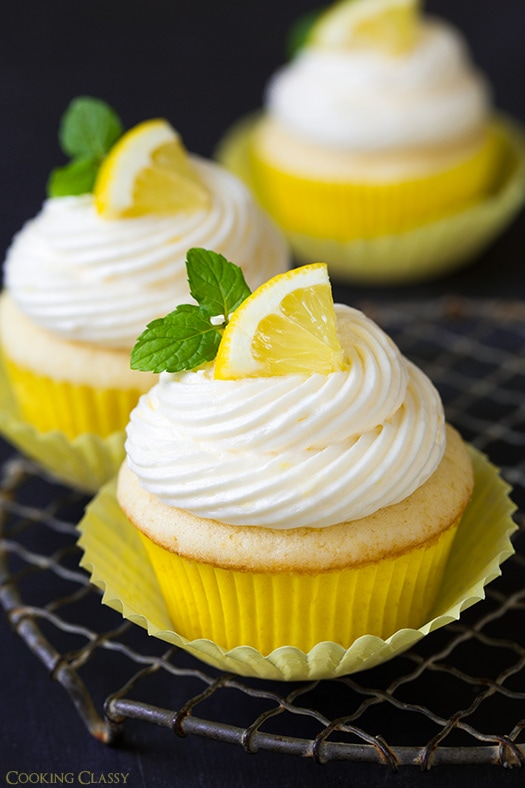

Lemon Cupcakes

Description
Here is a recipe I use for beautifully delicious lemon cupcakes.
Ideally, you'd use buttercream frosting to ice cupcakes, but I tried
these with Lemon Cream Icing for a less buttery icing, and they were
perfect! These cupcakes are truly lighter than air and will melt in
your mouth.
To make lemon cupcakes it will take you roughly around 1 hour and
25 minutes, including a preparation time. For preparation you might
need around 50 minutes and for cooking around 20 minutes.
Ingredients
For the lemon cupcakes, you'll need:
- All-purpose flour
- Cake flour
- Baking powder and baking soda
- Salt
- Granulated sugar
- Lemon zest and juice
- Unsalted butter
- Eggs
- Vanilla extract
- Buttermilk
- Fresh lemon juice
- Simple syrup
And for the homemade lemon buttercream frosting, you’ll need:
- Butter
- Lemon zest and juice
- Powdered sugar
- Heavy cream
- Vanilla extract
- Lemon extract
Steps
To make lemon cupcakes, just follow these simple directions:
- Preheat oven to 350 degrees F.
- Sift both flours into a mixing bowl. Add baking powder, baking soda and salt, then whisk and set aside.
- In a food processor, pulse together granulated sugar with lemon zest until finely ground.
- Whip together butter with lemon sugar mixture until pale and fluffy.
- Mix in egg, then mix in egg whites one at a time, adding in vanilla with second egg white.
- Add the rest of the wet ingredients and the dry ingredients into the butter mixture.
- Bake cupcakes until toothpick inserted into center of cupcake comes out clean.
- Prepare the simple syrup by whisking together the lemon juice and granulated sugar. Brush mixture over warm cupcakes.
- Make the lemon buttercream frosting by whipping the butter with the lemon zest until very pale and fluffy.
- Mix in powdered sugar, then blend in lemon juice, cream, vanilla extract and lemon extract.
- Pipe or spread frosting over cupcakes.
Bon Appetite! your lemon cupcake is now ready.
If you want alternative recipe, click on
NEXT
Want to learn more about this reciipe, click on
cookingclassy.com
Homepage